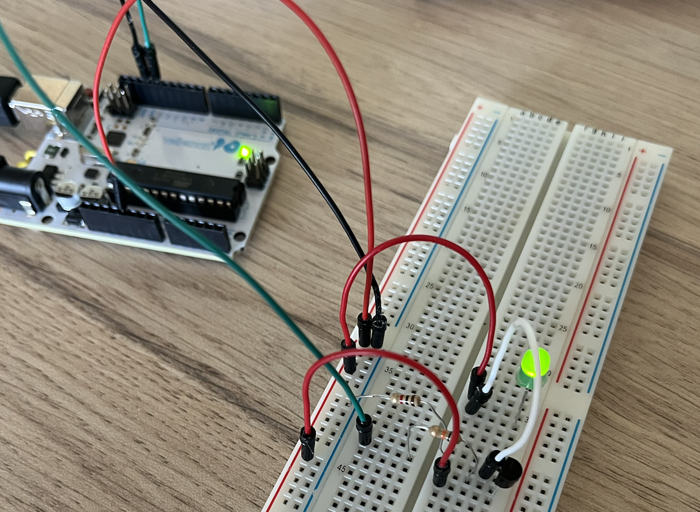
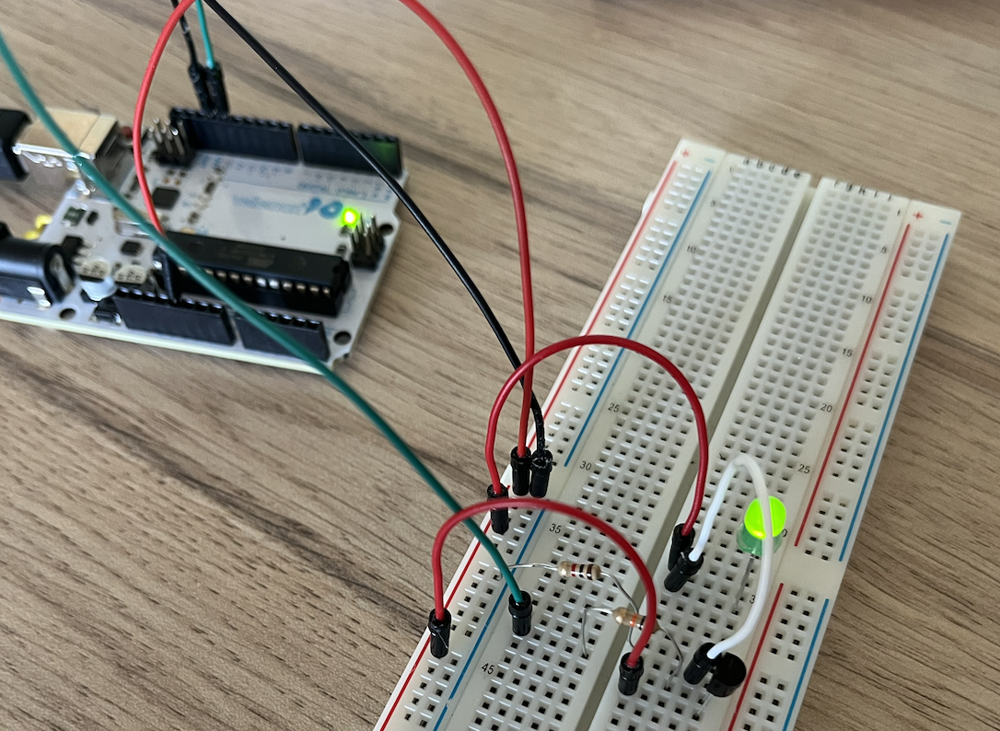
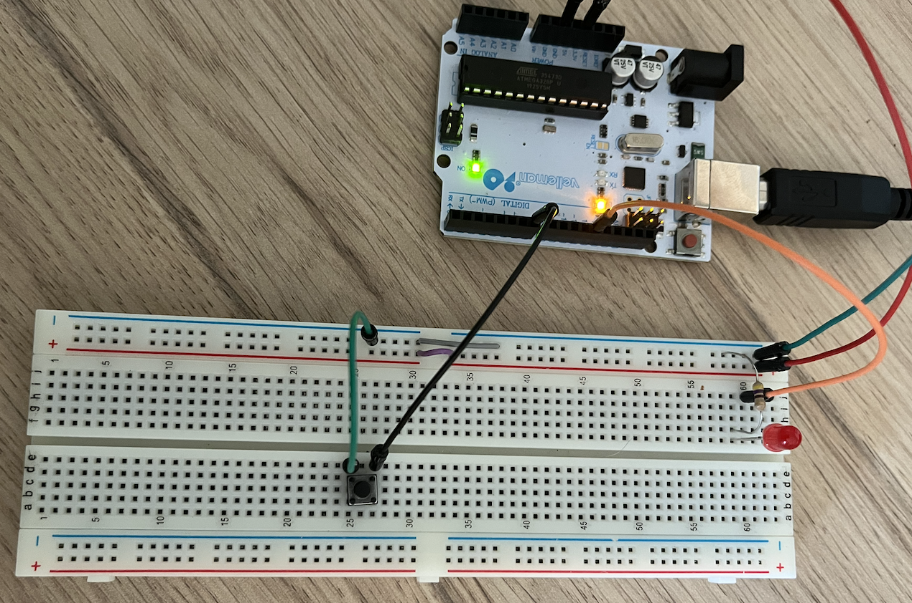
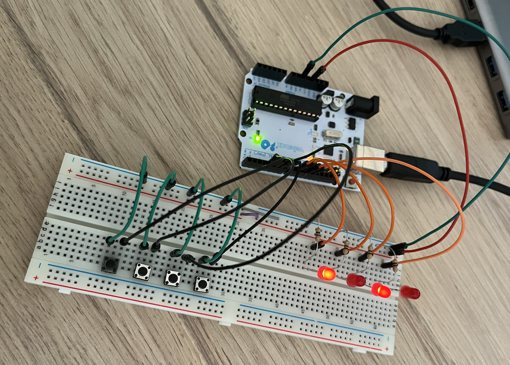
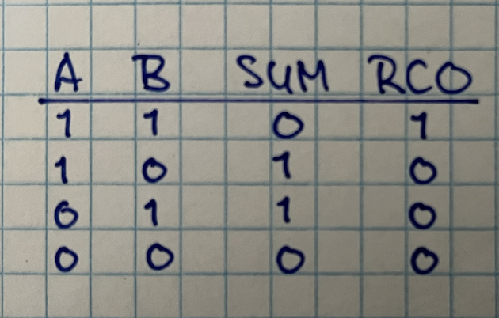
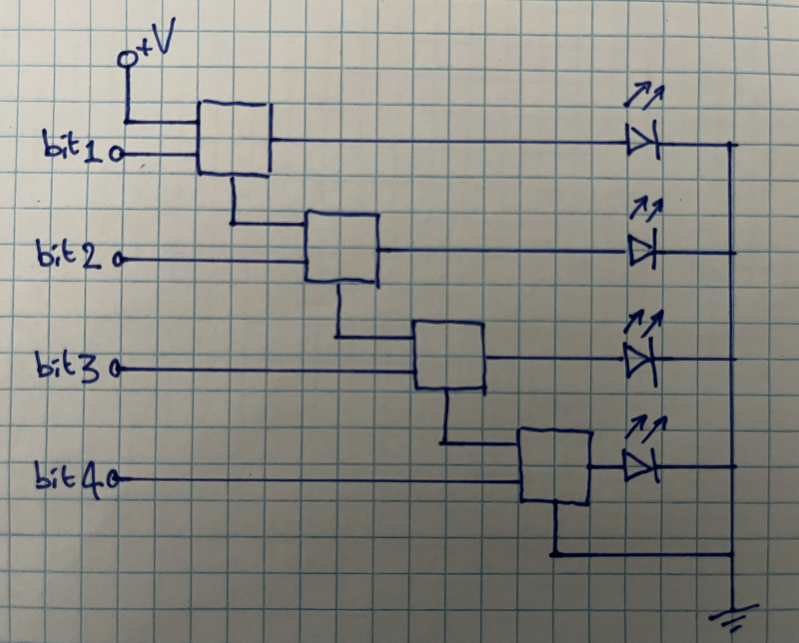

Preparation
The Arduino platform has since its start in 2005 grown to become one of the most recognizable brands in the space of electronics and embedded design.
- Study the following introductionary texts on the (workings of the) Arduino:
Download the Arduino Integrated Developen Environment (IDE) and make sure your Arduino is found by this software; you can easily check this by opening Files → Examples → 01.Basics → Blink and hitting the Upload button on the top-left of the IDE. If the connection between your computer and the Arduino is correct, the code will upload and the small onboard LED will start to blink.
If your computer cannot find the Arduino, you'll get an error message stating something like can't open device. In that case, use Tools → Port to select another port (those are actually your USB-ports)

- Have a look at this nice wooden adding machine.
Exercises
Off course, we need to use our breadboard to actually create interesting stuff, as the pins on the Arduino are too few, too narrow and too error prone to be workable.
Exercise 1: expanding on the blink example
Make sure you have the blinking LED example loaded on your Arduino. As has been explained, the pin that corresponds to the buildin LED is 13. Make use of this knowledge to have a LED on the breadboard blink. Next, add a few more LEDs on the same pin (or port, as they are also called regularly). For a nice effect, you can perhaps use different colors of LEDs.
Can you make use of your knowledge of transistors that we worked on in week 1 to have an LED on the breadboard blink when the one on the Arduino is off and vice versa, without changing the code on the Arduino? This is called a signal inverter. How about having two LEDs blink one after the other? Note that for this to work, you have to differentiate between the signal (pin 13) and the current (5V of 3.5V).
 

Exercise 2: Input and output of analog signals
Step 1: create a walking light
Realise a breadboard with four LEDs in parallel (kind of the same circuit we created in week 1). Have the positive pin of each of the LEDs wired to a different (but sequential) port on the Arduino (e.g. pins 4, 5, 6, and 7). Next, create a new Arduino-sketch in which you define all those pins as OUTPUT (you should do this in the setup() method; have a look at the BlinkingLed-example).

Now, in the loop() method, you should iterate over all those pins and set them to HIGH, wait for a few microseconds, set them to LOW again and repeat the process for the next pin. Have a look at the code below to get an idea of this process:
void loop() {
digitalWrite(4, HIGH);
delay(500);
digitalWrite(4, LOW);
delay(500);
}
However, as has been explained last week, in such a case it is better to create an array that keeps all the numbers of the ports where the LEDs are connected. Create such an array and initialize it with the correct pin-values. Next, in your loop() iterate over this array and have every pin switch on and off. If all goed well, you have created a walking light. Can you make this light go back and forth as well? Play around with the value of the call to delay() to get a feeling of the effects of the changes you make.
Step 3: add a variable resistor
Add a variable resistor (a potentiometer) to your breadboard. Connect the external pins to the plus and the minus and the middle pin to an analog input of the Arduino; look at the drawing and the image below to see how to do this.
Next, create a new sketch and copy the code below. If you run this sketch with the serial monitor open, you will see the value that the Arduino is reading from the potentiometer. If you turn it, you will notice that the value that it is reading goes from 0 to 1023, while the second parameter is going from 1 to 255 (this is an edited example from Arduino.cc itself).
const int analogInPin = A0; // Analog input pin that the potentiometer is attached to
int sensorValue = 0; // value read from the pot
int outputValue = 0; // the value we are going to use later on
void setup() {
Serial.begin(9600);
}
void loop() {
// read the analog in value:
sensorValue = analogRead(analogInPin);
// map it to the range of the analog out:
outputValue = map(sensorValue, 0, 1023, 0, 255);
Serial.print("sensor = ");
Serial.print(sensorValue);
Serial.print("\t output = ");
Serial.println(outputValue);
delay(2);
}


Step 4: putting it all together
Now use this code above to change the value of the call to delay() in your walking light. Have the Arduino read and map the value of the potentiometer on every loop; if all goes well, you are now able to change the speed with which the LEDs are 'walking' by changing the value of the potentiometer.
Now replace the potentiometer with some kind of sensor. That way, you can make the speed of the walking LEDs dependent on for example the distance of the breadboard to a wall, or the humidity of the air, or the bending of an arm, or ... There are several sensors in your set.
Exercise 3: Input, output and states (challenge)
In this exercise, we are going to use the Ardiuno to create a four bit full adder with ripple carry out. In order to do this, we need to give the Arduino a state: a sort of memory which it can use to remember what has happened before. We are going to to this is some small steps.
Step 1: adding state
First, connect an LED to port 12 and a small push button to port 7, using jump wire to put it all on your breadboard. Remember to put a 170 Ω resistor between the port and the LED. Next, study and copy the code below (or download it here), and upload it to your Arduino. As you will see, once you hit the push button, the LED will go on and stay on, even when the push button is released again. You can see that this functions as kind of memory for the system: it remembers that the button has been pressed at least once. Make sure you understand why this code is doing what it is doing.
int BUTTON_PINS[4] = {7,6,5,4};
int LED_VALUES[4] = {0,0,0,0};
int LED_PINS[4] = {12,11,10,9};
void setup() {
for (int i=0; i<4; i++) {
pinMode(BUTTON_PINS[i], INPUT_PULLUP);
pinMode(LED_PINS[i], OUTPUT);
}
}
void loop() {
for (int i=0; i<4; i++) {
if (digitalRead(BUTTON_PINS[i])==0) LED_VALUES[i]=1;
}
setLedValues();
delay(100);
}
void setLedValues() {
for (int i=0; i<4; i++) {
if (LED_VALUES[i]==1) digitalWrite(LED_PINS[i], HIGH);
}
}Step 2: expanding the circuit
Now, expand the circuit so that you have four push buttons controlling four LEDs. Make sure you use the correct pins for both the buttons and the LEDs (or change the code accordingly).
 
Step 3: adding a REGISTER button
The next step is to make the states of the four LEDs being updated at once; this way, they will form the register of the first four bits that we will add to a second quarted; for this, we will need another push button that will function as a REGISTER button. The idea is that we keep the correct set of push buttons down while at the same time pushing this REGISTER button, thereby storing four bits in the memory of the arduino.
Add this push button to your circuit and update the code so that the storing of the four bits is done in one flow.
Step 4: adding an ADD button
Next, we are going to introduce yet another push button that will function as an ADD button. This button adds the next quarted of bits to the bits already stored in memory. As has been explained, binary addition works like an AND-gate with two inputs and two output; the truth-table for this port is shown below. The RCO of each bit actually forms one of the inputs of the second bit, to the complete circuit for our adder is as follows:
 
Assignment
Use the knowledge you have gained during this workshop to create a circuit that does something when a certain even occurs. You can use your own creativity and skills to come up with a plan. You could think of playing a sound when someone comes too close to your project (distance sensor), blink a light faster when the temperature rises (temperature sensor). Also think about different kinds of actuators: you have a servo-motor, an electron motor and lots of LEDs.
Make such a small project with your partner. Be sure to describe why you have chosen the project that you have made and document the whole process using both text and images. Be sure to upload both the code and the document on your teams student folder before the next session. As you are working in pairs, upload the documents on both your student folders.
We will start our next (and final) session with a small demonstration of the projects you have delivered, so be creative.